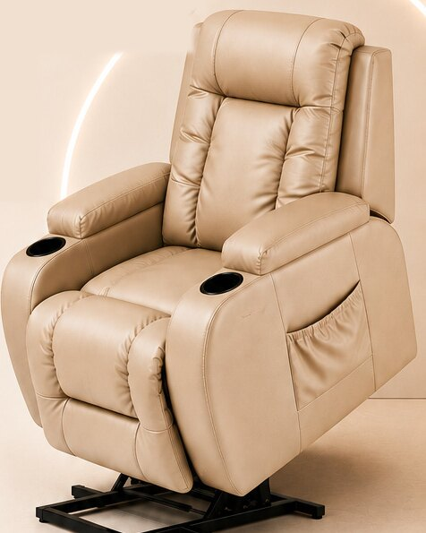

Uma cadeira certa para o seu pós-operatório
A Recupere Prime aluga cadeiras para quem fez abdominoplastia, mastopexia, mamoplastia, prótese de silicone e outras cirurgias. A gente leva até a sua casa e busca quando você não precisar mais.
Atendemos o Norte e o Noroeste Fluminense, incluindo Campos e Macaé, e a Região dos Lagos.

Feita para quem acabou de operar
Nos primeiros dias, sentar e levantar exige cuidado. Uma cadeira própria para essa fase deixa a casa pronta para você descansar.
Abdominoplastia
Apoio para os dias de repouso em casa.
Mastopexia
Um lugar firme para sentar e descansar.
Mamoplastia e silicone
Aumento, redução e prótese de silicone.
Lipoaspiração
Conforto durante a recuperação.
Outras cirurgias
Não achou a sua? Chame e a gente conversa.
Ajustes ergonômicos
Posições que se adaptam ao seu corpo e à sua necessidade.
Função de massagem
Alivia tensões, melhora a circulação e proporciona relaxamento.
Controle de temperatura
Ajuste térmico que aquece ou refresca, trazendo alívio e bem-estar.
Ajuste de altura
Mais autonomia e facilidade para levantar, sentar e se movimentar.
Conforto que cuida, tecnologia que transforma
Poltronas ergonômicas com funções inteligentes para uma recuperação mais leve, segura e tranquila.
Você chama no WhatsApp
Conta a data da cirurgia e a cidade onde vai se recuperar.
Combinamos tudo
Escolhemos o período de aluguel e confirmamos o valor.
Entregamos em casa
A cadeira chega higienizada, no dia combinado, antes de você voltar do hospital.
Buscamos quando acabar
Precisou de mais tempo? Avisa, e a gente prorroga.
Do pedido à retirada, sem você sair de casa
Quatro passos, todos pelo celular.
Sobre a Recupere Prime
Somos de Campos dos Goytacazes e trabalhamos com uma coisa só: aluguel de cadeiras para o pós-cirúrgico.
Quem opera passa por uma fase delicada, e a rotina em casa precisa ser simples. Nosso trabalho é que a cadeira chegue no dia certo, limpa, e que você não precise se preocupar com mais nada além de descansar.
Atendemos clientes do Norte e do Noroeste Fluminense, de Campos a Macaé, e da Região dos Lagos.
Norte Fluminense
Campos dos Goytacazes, Macaé e cidades da região.
Noroeste Fluminense
Cidades do Noroeste do estado. Chame no WhatsApp e confirmamos a sua.
Região dos Lagos
Araruama, Armação dos Búzios, Arraial do Cabo, Cabo Frio, Iguaba Grande, São Pedro da Aldeia e Saquarema.
Do Norte ao Noroeste Fluminense, e na Região dos Lagos
Conte a sua cidade no WhatsApp e confirmamos a entrega.
Planos de locação
Escolha o período ideal para cada etapa da sua recuperação. Quanto mais dias, menor a diária.
-
7 dias
EssencialIdeal para
- Cirurgias de pequeno porte
- Mastopexia
- Implante capilar
R$ 70,00 a diária
-
15 dias
ComfortIdeal para
- Prótese
- Mastopexia
- Abdominoplastia
- Pós parto
R$ 60,00 a diária
-
20 dias +
Bem estarIdeal para
- Prótese
- Abdominoplastia
- Mastopexia
- Blefaroplastia
- Pós parto
R$ 50,00 a diária
Frete a combinar. Parcelamos no cartão.
“E a poltrona caiu como um colo de mãe. Surreal de bom. Ela simplesmente nos abraça.”
“Nossa, foi o melhor investimento que eu fiz nesse pós operatório. Tem me salvado!”
“Ela está me salvando, só consigo dormir nela. A vibração que ela faz acalma mto as dores.”
“Muito! Não sei como estaria se não fosse a poltrona.”
“Uma benção.”
Quem já se recuperou com a gente
Mensagens reais de clientes, enviadas pelo WhatsApp depois da entrega.
As conversas, como chegaram
Os nomes de contato no topo de cada conversa foram cobertos. Toque para ampliar.
Perguntas frequentes
Não achou a sua dúvida? Pergunte no WhatsApp.
Para quais cirurgias vocês alugam cadeiras?
Abdominoplastia, mastopexia, mamoplastia (aumento, redução e prótese de silicone), lipoaspiração e outras cirurgias. Se a sua não está na lista, chame no WhatsApp e conversamos.
Quando devo reservar a cadeira?
Assim que a data da cirurgia estiver marcada. Reservando com antecedência, a cadeira fica garantida para o dia em que você voltar para casa.
Vocês entregam em quais cidades?
No Norte Fluminense (Campos, Macaé e região), no Noroeste Fluminense e na Região dos Lagos: Araruama, Armação dos Búzios, Arraial do Cabo, Cabo Frio, Iguaba Grande, São Pedro da Aldeia e Saquarema. Se a sua cidade não está na lista, chame no WhatsApp.
Por quanto tempo posso alugar?
O período é combinado com você e pode ser prorrogado se a recuperação pedir mais tempo. É só avisar pelo WhatsApp.
A cadeira é higienizada?
Sim. Cada cadeira é higienizada antes de sair para um novo aluguel.
Posso reservar para uma familiar ou amiga?
Pode. Precisamos apenas do endereço de entrega e da data da cirurgia.
A cadeira substitui a orientação do meu cirurgião?
Não. A cadeira é um apoio para o seu conforto. Siga sempre as orientações da sua equipe médica.
Sua cadeira, pronta quando você chegar em casa
Conte a data da cirurgia e a cidade. Respondemos com o valor e a data de entrega.
Chamar no WhatsApp